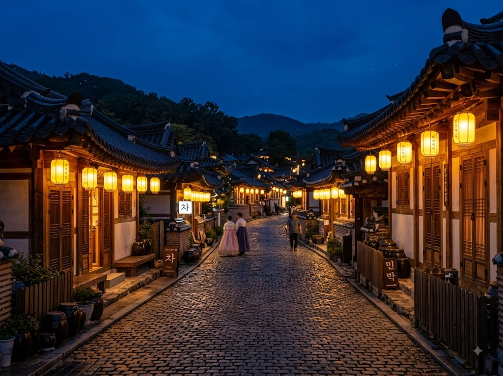
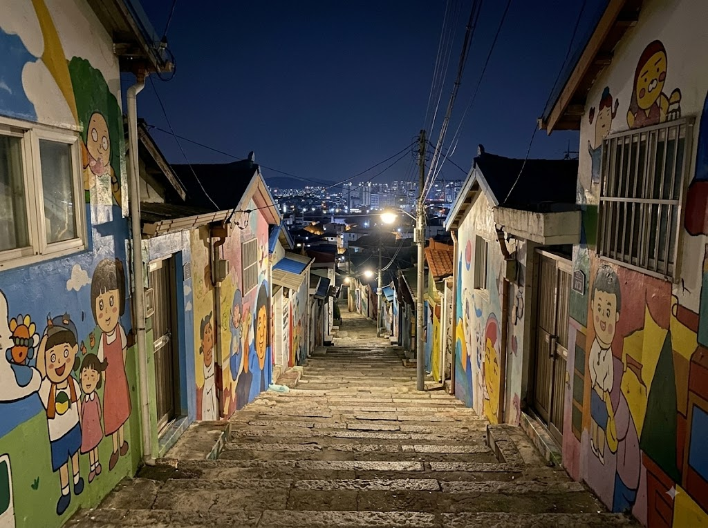
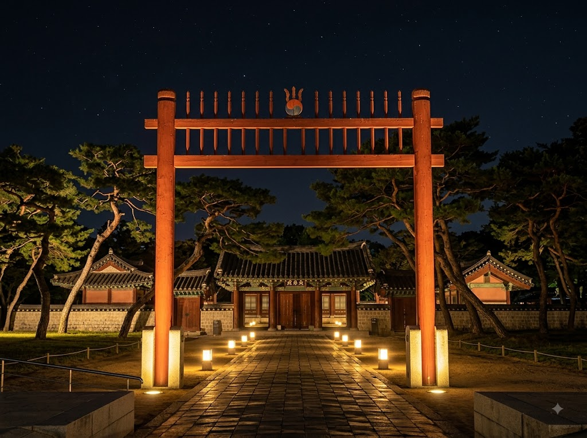

낮에만 전주 한옥마을을 다녀왔다면 절반만 본 셈입니다. 해가 지고 한옥 처마 아래 노란 등이 하나둘 켜지면, 낮과는 전혀 다른 분위기의 야경 산책길이 열립니다. 오목대 전망대에서 한옥마을 전체를 내려다보고, 자만벽화마을 골목을 거슬러 걷는 코스는 8월 늦여름 저녁에 특히 걷기 좋습니다.

전주 한옥마을(완산구 교동·풍남동 일원)은 700여 채의 전통 한옥이 밀집한 국내 최대 규모 한옥 집단 거주지입니다. 낮에는 수많은 방문객이 몰려 좁은 골목이 복잡하지만, 저녁 7시 이후에는 관광객이 빠지기 시작해 고즈넉한 분위기로 바뀝니다.
한옥마을 야경의 핵심은 조명입니다. 각 한옥마다 처마 밑에 걸린 홍등과 노란 등불이 점등되면, 기와 지붕 선이 조명을 받아 낮과는 전혀 다른 입체감을 자아냅니다. 경기전 돌담길과 풍남문 앞 광장에도 조명이 설치되어 야경 산책 코스로 인기가 높습니다.
무더운 8월 낮보다 저녁 이후 기온이 내려가면 야외 걷기에도 훨씬 쾌적합니다. 해질 무렵(오후 7시~8시) 한옥마을에 도착해 야경 산책을 하고, 콩나물국밥이나 막걸리 한 잔으로 마무리하는 코스는 전주 1박 2일 여행의 정석 루틴입니다.
오목대(梧木臺)는 한옥마을 동쪽 언덕 위에 자리한 정자로, 이성계가 고려 말 황산 대첩에서 승리한 뒤 귀경길에 잠시 머물렀다는 역사적 유래가 있습니다. 현재는 한옥마을 전체 조망을 위한 최고의 전망 포인트로 명성이 높습니다.
오목대에 오르면 기와 지붕들이 물결처럼 펼쳐지는 파노라마 뷰가 펼쳐집니다. 특히 일몰 직후부터 밤 9시 사이가 가장 아름다운 야경을 감상할 수 있는 황금 시간대입니다. 한옥마을의 등불이 하나씩 켜지며 오색 빛깔로 물드는 장면은 카메라로 담기에도 최적입니다.
오목대까지는 한옥마을 중심부에서 도보로 약 5~10분 거리입니다. 계단이 다소 가팔라 샌들보다는 운동화가 편합니다. 정자 주변 벤치에 앉아 야경을 감상하며 쉬어가는 여행자들이 많습니다.
자만벽화마을은 오목대 아래쪽 경사면에 위치한 달동네입니다. 수십 년 전 형성된 이 주거지에 지역 예술가들이 골목 벽면마다 벽화를 그려 넣으면서 특색 있는 관광 명소로 탈바꿈했습니다.
낮에도 아기자기한 벽화 구경이 좋지만, 야간에는 골목 구석구석 가로등 불빛 아래 벽화가 또 다른 분위기를 냅니다. 벽화 테마는 동물·꽃·일상 풍경·추상화 등 다양하며, 좁은 골목 계단을 오르내리며 하나씩 발견하는 재미가 있습니다.
자만벽화마을은 현재도 실제 주민이 거주하는 생활 공간입니다. 이른 아침과 늦은 밤에는 주민 생활에 방해가 되지 않도록 조용히 관람하는 에티켓이 필요합니다. 큰 소리로 떠들거나 사유지 내부를 무단 촬영하는 행위는 삼가 주세요.

경기전(慶基殿)은 조선 태조 이성계의 어진(초상화)을 봉안한 사당으로, 한옥마을 내 대표 문화재입니다. 낮에는 관람객이 많아 붐비는 편이지만, 야간 특별 개장 기간에는 조명을 받은 홍살문과 돌담길이 고즈넉한 분위기를 자아냅니다.
야간 개장 일정은 매년 여름·가을 시즌에 한시적으로 운영되며, 정확한 기간과 입장료는 전주시 공식 관광 사이트에서 확인하셔야 합니다. 야간 개장 기간에는 사당 내부를 다른 조명과 연출로 꾸며 특별한 분위기를 조성합니다.
경기전 정문 앞 풍남문 광장도 야간 조명이 아름다운 포인트입니다. 풍남문(전주 구 성곽의 남문)을 배경으로 기념 사진을 찍는 여행자가 많습니다.
아래는 저녁 7시 도착 기준 약 2시간 30분짜리 야경 산책 코스입니다.
전주 한옥마을의 먹거리는 낮보다 야간에 더 여유롭게 즐길 수 있습니다. 낮 시간 관광객이 집중되는 유명 맛집들도 저녁에는 대기 줄이 줄어드는 경우가 많습니다.
콩나물국밥은 전주를 대표하는 해장·야식 음식입니다. 전주 남부시장 인근과 삼천동 콩나물국밥 거리에서 맛볼 수 있으며, 뚝배기에 담긴 뜨끈한 국밥 한 그릇이 야경 산책 후 속을 따뜻하게 채워줍니다.
남부시장 야시장은 매주 금요일·토요일 저녁에 열립니다(시즌별 확인 필요). 다양한 분식과 수제 먹거리 부스가 들어서며, 한옥마을 야경 산책과 묶어 방문하기에 좋습니다.
막걸리 한옥 바: 한옥마을 골목 안 작은 한옥을 개조한 막걸리·전통주 가게들이 눈에 띕니다. 도수가 낮은 전통 막걸리를 한 잔 기울이며 한옥 마당에서 야경을 즐기는 것도 전주만의 특별한 경험입니다.
전주 한옥마을 야경을 제대로 즐기려면 한옥 마을 내 한옥 스테이를 강력 추천합니다. 한옥 방에서 고즈넉하게 하룻밤을 보내는 것 자체가 여행의 핵심 경험이 됩니다.
한옥 스테이 가격은 방 유형에 따라 1박 6만~20만 원대까지 다양합니다. 마당이 있는 독채 형태, 공용 공간을 나눠 쓰는 게스트하우스 형태 등 선택지가 많습니다. 성수기(7~8월, 추석 연휴)에는 한 달 전 예약이 필요할 만큼 인기입니다.
야경 산책과 함께 한복 체험도 빠뜨리기 어렵습니다. 한옥마을 내 한복 대여점들은 이른 아침부터 늦은 저녁까지 운영하며, 한복을 입고 야경 사진을 찍는 것이 인기 여행 루틴이 되었습니다. 한복 대여 비용은 2~4시간 기준 1~2만 원대입니다.

전주는 KTX로 서울에서 1시간 30분~40분이면 도달할 수 있어 당일치기도 충분히 가능합니다.
KTX 이용 시: 서울역에서 KTX를 타면 전주역까지 약 1시간 40분 소요됩니다. 전주역에서 한옥마을까지는 택시로 5~10분, 시내버스로 20~30분 거리입니다. 야경 목적이라면 오후에 출발해도 충분합니다.
자가용 이용 시: 서울에서 호남고속도로로 전주IC까지 약 2시간 30분 소요됩니다. 주말에는 정체가 심하므로 여유 있게 출발하세요. 한옥마을 인근 공영주차장은 선착순이며, 성수기에는 조기 만차가 됩니다. 전주역 주변 주차 후 택시·버스로 이동하는 방법도 있습니다.